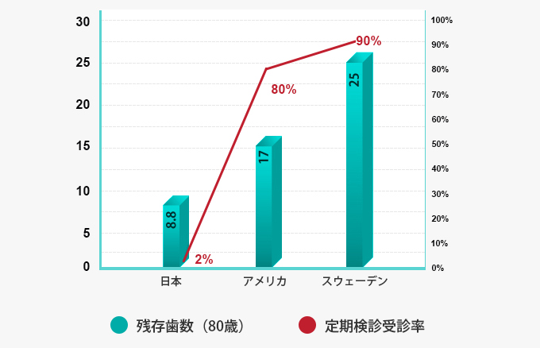

予防歯科


秋葉原駅
徒歩3分
虫歯や歯周病にかかってしまったらできるだけ早く治療すべきなのはいうまでもありませんが、それよりもっと大切なのは、虫歯や歯周病にかからないようにすることです。千代田区秋葉原の歯医者「中川歯科クリニック」では、痛い治療を受けることなくお口の健康を維持できる予防歯科に力を入れています。
日本人の歯は、80歳になった時点で平均8.8本しか残っていないといわれています。しかしこれは、歯科先進国と呼ばれる国々に比べて予防意識が高くない現状の数字です。多くの方が予防の大切さを理解し、定期的にお口のメインテナンスを行うことによって、この数字はどんどん増えていきます。歳を取っても自分の歯を失わないために、予防歯科の受診をお考えください。

予防歯科の基本は毎日のブラッシングですが、ご自宅でブラッシングやフロス、歯間ブラシなどの補助器具を使って丁寧に磨いたとしても、すべての汚れを落としきることはできません。少しずつ蓄積してしまった汚れや磨き残し（プラーク）は、放置しておくと唾液中の石灰分を吸収し「歯石」になってしまいます。また「歯石」を放置すると、歯周ポケットが広がってしまい、「歯周病」や「歯肉炎」などを引き起こしてしまいます。
定期的にプロによるお口のクリーニングできれいに取り除きましょう。
当院では口腔衛生のプロである歯科衛生士が、責任を持ってお口の管理とケアを行います。毎日のお手入れに歯科医院の適切なメインテナンスをプラスすることで、予防効果をさらに高めることができます。
身体やお口の状態は一人ひとり異なり、虫歯や歯周病になってしまう原因も人それぞれ。そのため、同じ虫歯予防でも患者様によって効果は変わってきます。当院では患者様一人ひとりにとって最適な虫歯予防を実現するために、唾液検査を行っています。
唾液検査は、専門のキットを使って唾液のさまざまな働きを調べる検査です。唾液は虫歯からお口の健康を守ってくれるバリアのようなもの。唾液をチェックすることによって、次のようなことがわかります。
唾液の量
唾液の中和力
虫歯菌の数
それぞれの項目が、虫歯のなりやすさ（＝虫歯リスク）と深く関係しています。どの項目が虫歯の原因になっているかは一人ひとり異なりますが、その異なる原因に対して正しいアプローチを行うことによって虫歯予防の効果を高めることができます。今、あなたが虫歯になりやすい状態だったとしても、心配する必要はありません。
STEP
01
問診票に必要事項を記入していただきます。書かれている内容を確認しながら、現在の健康状態やお悩み、生活習慣などについてうかがいます。
STEP
02
レントゲン撮影を行い、患者様の口腔内の状態を確認します。レントゲンのデータをふまえたうえで、歯型を採り矯正装置を製作します。
STEP
03
採取した唾液の分泌量を測定します。唾液の分泌量の目安は次のとおりです。
| 15歳以上 | 約1〜3ml/分 |
| 11〜14歳 | 約0.7ml/分 |
| 13歳以上 | 約0.5ml/分 |
STEP
04
口腔内が酸性に傾くと、虫歯になりやすい状態になります。口腔内の酸・アルカリの度合いに変化が起きたとき、唾液が正常な状態に戻ろうとする力（中和力）をチェックします。
STEP
05
代表的な虫歯菌であるミュータンス菌とラクトバチラス菌がどれだけ唾液に含まれているかを調べます。採取した唾液は、数日間培養したあとでモデルチャートと比較します。
STEP
06
検査結果から虫歯のリスクを判断し、患者様に適した予防方法をお伝えします。
口腔衛生のプロである歯科衛生士が、患者様一人ひとりに最適なブラッシングの指導や生活習慣におけるアドバイスなどを指導いたします。
ご自宅でブラッシングやフロスなどの日常的なケアと定期的なプロのクリーニングを組み合わせることで、徹底した虫歯予防を実現することができます。
| 診療時間 | 月 | 火 | 水 | 木 | 金 | 土 | 日(祝) |
|---|---|---|---|---|---|---|---|
| 9:30 〜 13:00 | ◯ | ◯ | ◯ | ー | ◯ | ◯ | ー |
| 14:00 〜 19:00 | ◯ | ● | ◯ | ー | ◯ | △ | ー |
● … 14:00 〜 18:00 △ … 14:00 〜 16:00 の診療時間になります。
● … 14:00 〜 18:00
△ … 14:00 〜 16:00 の診療時間になります。